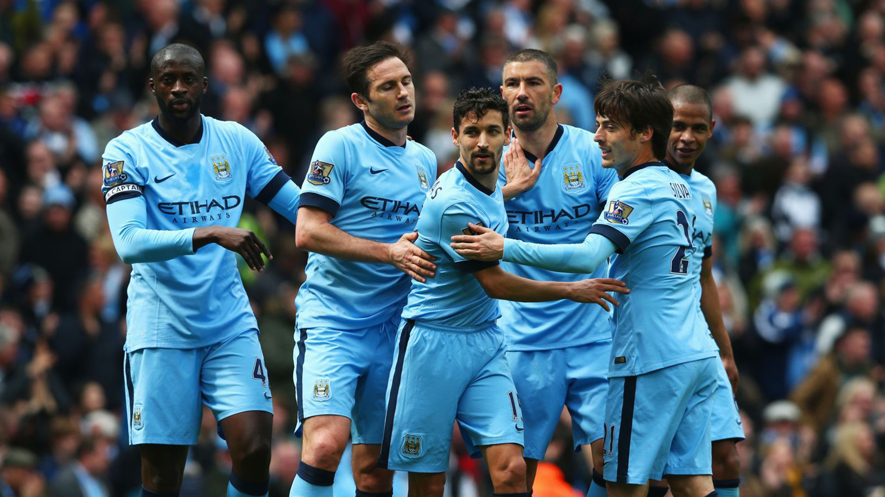

Manchester City FC Home Kit
2012

Venturing into the heart of England, my sojourn led me to the vibrant city of Manchester, where the pulse of football beats strongest. Navigating the bustling streets, my pilgrimage reached its pinnacle at the revered Etihad Stadium, home to the indomitable Manchester City. The air was charged with anticipation as I entered the club's merchandise enclave, irresistibly drawn to the azure blue brilliance of the Manchester City kit. The jersey, adorned with the iconic club crest, became a sartorial emblem of my allegiance to the Sky Blues. Donning the kit, I felt an immediate connection to the city's footballing fervor and the unwavering spirit of the fans. The matchday experience unfolded as a spectacle of passion and skill, with every cheer echoing through the stadium's arches. The Manchester City kit, now a cherished relic, symbolizes not only the thrilling journey through the city but also the camaraderie and pride that define the essence of football fandom in Manchester.